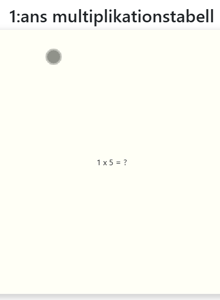
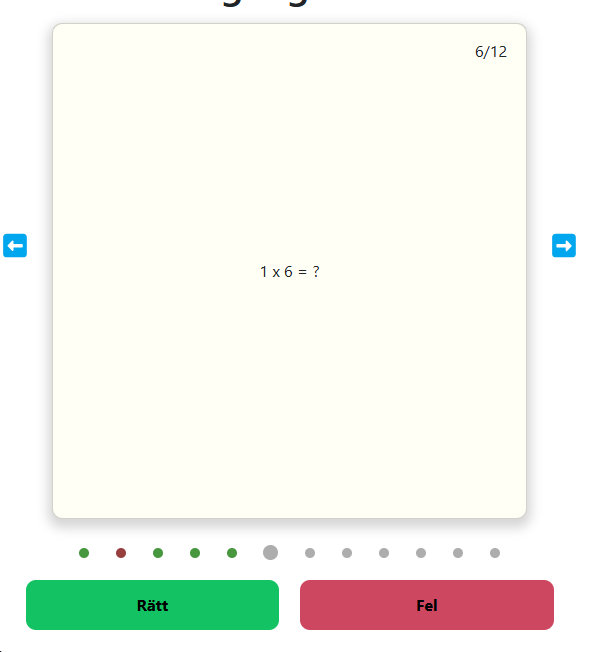
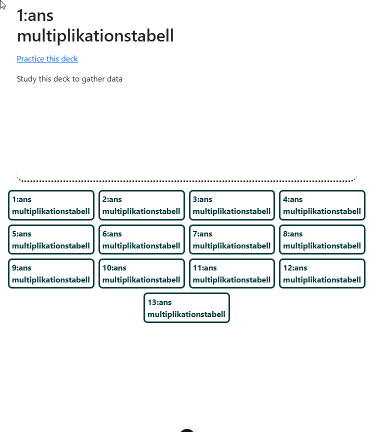
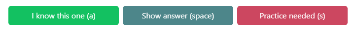
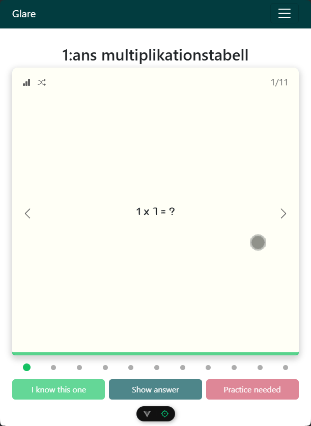
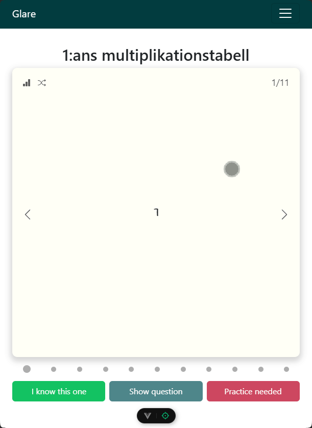

En teknisk rapport för utvecklingen av Glare, en flashcardstjänst. En rapport som jag successivt antecknat i, genom produktens utveckling. Till en början hänvisa jag till githublänkar som markerar kodsnippets som jag utvecklat, dock ganska snabbt insåg jag att koden förändras och utvecklas, vilket resulterade i att länkarna inte uppdaterar korrekt rader kod. Därför har jag gjort all kod "collapsable", så för att se kod behöver du trycka på pilarna. Testa nedan
function isUserNoob() {
if (userSeeThis) {
return false;
}
return true;
}
// Snyggt! Nu vet du hur du går till väga resten av rapporten
För att underlätta förståelsen av alla snippets så har jag modifierat koden så den följer samma röda tråd som beskrivningen. Detta för att undvika distraherande kod som kan vilseleda förståelsen av själva funktionalliteten.
Till en allra första början skapade vi en .json fil som hade strukturen vi förväntade oss att jobba med framöver
{
"decks": [
{
"title": 1:ans multiplikation,
"cards": [
{
"question":"1 x 1 = ?",
"answer" : "1"
},
...
]
},
...
]
}
Som första steg ville jag se ifall jag kunde fetcha information från en .json fil
<script setup>
import { ref } from "vue";
async function getDecks() {
const response = await fetch("/decks.json");
let data = await response.json();
decks.value = data;
}
const decks = ref([]);
getDecks();
console.log(decks.value);
</script>
<template>
<h1>hej från flashcard</h1>
<ol>
<li v-for="deck in decks">{{ deck.title }}</li>
</ol>
</template>
Jag fick idén att hämta kortlek och respektives kort genom att lyssna
vilket vika värden som finns i URL:n, så när man skriver
"/collection/1/2" i webläsaren ska man komma till andra kortet i
kortlek nr 1.
Det kändes som en bra lösning då det ända man behöver göra senare för att
navigera mellan kort är att addera eller subtrahera värdena från urln,
plus det ger användaren möjlighet att navigera sig snabbt till en lek
genom att spara länkar. Det verkar med andra ord användarvänligt.
Utmaningen var att kortet skulle lyssna på url:n både vid uppdatering av
sidan och när man anger nya värden i urln, detta löste jag med genom att
implementera onMounted() och on befoureRouteUpdate()
Implementerade även en toggle, så när man trycker på space, ska frågan och
svar togglas fram och tillbaka, bara för att jag personligen är en
keyboard fantast.

function revealAnswer() {
hideAnswer.value = false;
console.log("reveal");
}
function handleKeyDown(event) {
if (event.code === "space" || event.key === " ") {
revealAnswer();
}
}
// Update deckId and cardId when page refreshes
onMounted(async () => {
await getDecks();
watchEffect(
() => [route.params.deckId, route.params.cardNr],
(currentDeck.value = decks.value[route.params.deckId]),
(currentCard.value = currentDeck.value.cards[route.params.cardNr]),
console.log(currentDeck.value),
console.log(currentCard.value)
);
// Create eventlistener to any keydown
window.addEventListener("keydown", handleKeyDown);
});
onBeforeUnmount(() => {
window.removeEventListener("keydown", handleKeyDown);
});
// Update deckId and cardId when url changes
onBeforeRouteUpdate(async (to, from) => {
deckId = to.params.deckId;
cardNr = to.params.cardNr;
currentDeck.value = decks.value[deckId];
currentCard.value = currentDeck.value.cards[cardNr];
});
Jag och zaher har tillsammans rätt ut så man kan mata in en deck prop till komponenten CardCollection så att det visas ut en mapp på sidan som leder till motsvarande kortlek. Först tänkte vi mata in :title=title och :count=count men insåg sedan att det räcker med att mata in :deck=deck där deck är ett objekt så får komponenten själv ta fram titeln och räkna ut antalet kort i count.
<template>
<div class="container">
<!-- <FlashCard /> -->
<router-link
:key="deck.id"
id="nodeco"
v-for="(deck, index) in decks"
:to="`/collection/${index + 1}/1`"
>
<CardCollection :deck="deck" /> // Notera :deck
</router-link>
</div>
</template>
Istället för att fetcha korten dirrekt i FlashCard.vue så skapade jag en store för all flashcard funktionallitet där jag skapade både decks variabel och fetchCards funktion. Syftet är att man lätt och smitidigt ska kunna sammla alla funktioner som berör flashcards på ett och samma ställe. Utmaningen var att få det asyncrona att jobba för mig. Först skapade jag fetchen i getters, men fick senare svar på att det är inte menat att getters ska vara asynkrona.
import { defineStore } from "pinia";
export const useFlashcard = defineStore("flashcard", {
state: () => ({
decks: []
}),
actions: {
async fetchDecks() {
const response = await fetch("/decks.json");
this.decks = await response.json();
}
},
getters: {
// getters
}
});
För att i framtiden kunna möjligöra för användaren att skapa egna kort och
kortlekar så implementerade jag createCard(title, question, answer) och
createDeck(title, decks=[]) och med hjälp av dom fixade jag även en
dummydeck som skapar en sammling kortlekar med gångertabellerna 1-10, så
vi har data att bygga vår appikation runt.
Anledningen till att jag vill generera dummyDeck istället för att
modifiera .json filen är för att det blir repetativt arbete att ständigt
mata in ny data eller modifiera data. Risken för oregelbunden json objekt
blir stor. Så det underlättar att få dummyDecks genererad.
actions: {
createCard(title, question = "", answer) {
return {
title,
question,
answer,
needsPractice: false,
id: uuidv4(),
};
},
addToDeck(card, deckId) {
const deck = this.decks.filter((deck) => deck.id === deckId);
deck[0].cards.push(card);
},
createDeck(title, cards = []) {
const deck = {
title,
cards,
id: uuidv4(),
};
this.decks.push(deck);
return deck.id;
},
/**Genrates multiplication table from 1-12 and adds to this.decks */
dummyDeck() {
const tableAmounts = 10;
const tableLimit = 12;
for (let x = 1; x <= tableAmounts; x++) {
const deckTitle = `${x}:ans gånger tabell`;
const deckId = this.createDeck(deckTitle);
for (let y = 1; y <= tableLimit; y++) {
const title = `${x} x ${y} = ?`;
const answer = x * y;
const card = this.createCard(title, "", answer);
this.addToDeck(card, deckId);
}
}
return this.decks;
},
}
Jag ville att användaren ska kunna se hur långt in bland sina kort den
tagit sig, så idag implementerade jag en cardcounter, väldigt simpel
lösning. Utifrån url:n tar sidan fram actuell korlek för att räkna ut hur
många kort som finns i kortleken och sätta in det som ett maxvärde i
countern, samt hämtar cardIndex från url:n och visar ut vilket index
användaren befinner sig på
Ett problem jag märkte var att användaren kunde navigera sig ur kortlekens
max-kortantal. Så med hjälp av if conditions kollade jag så användaren
höll sig inom kortlekens längd. knapparna ska inte navigera över eller för
under kortantal.
// script
// Variables for count
const cardIndex = ref(0);
const cardAmount = ref(0);
watchEffect(
() => [route.params.deckId, route.params.cardNr],
updateCurrentCard(route.params.deckId - 1, route.params.cardNr - 1),
);
function updateCurrentCard(deckId, cardIndex) {
currentDeck.value = flashcard.decks[deckId];
currentCard.value = currentDeck.value.cards[cardIndex];
updateCount(flashcard.decks[deckId], cardIndex);
}
function updateCount(deck, cardNumber) {
cardAmount.value = deck.cards.length;
cardIndex.value = cardNumber + 1;
}
// template
<div v-if="hideAnswer" class="card" id="front">
{{ currentCard.question }}
<span id="count">{{ cardIndex }}/{{ cardAmount }}</span>
</div>

Jag tyckte min kod var rätt så elegant och smart som lösning för hantering av våra flashcardsfunktioner, dock insåg jag sen att det blev en krock med teamet iochmed att dom inte suttit sig in i pinia på samma nivå. Så där blev det utmanande att integrera kod med varrandra. Som lösning på det skapade jag en .json fil för dummyjson så lagmedlemmarna kunde berabeta den som om det vore en api fetch. Där jag basicly kompierade objectet som dummyDeck() spottatde ut och klistrade in i en .json fil.
Simon lade till pilarna som console loggade (previous) och (next), Jag och Zaher parprogrammerade fram funtionalliteten till pilarna så dom rör användaren bak eller fram i den aktuella kortleken. Eftersom jag tidigare designat att det är url:n som bestämmer vilket kort som ska visas var det väldigt enkelt att komma på en lösning, det var bara att plussa på eller subdrahera kort indexet i url:n för att navigera framm eller tillbaks.
<script setup>
function goPrevious() {
if (cardNr.value > 1) {
cardNr.value--;
}
}
function goNext() {
const cardAmount = currentDeck.value.cards.length
if (cardNr.value < cardAmount) {
cardNr.value++;
}
}
</script>
<template>
<div class="flashcard">
<router-link :to="`${cardNr}`">
<button class="arrow" @click="goPrevious">⬅️</button>
</router-link>
<FlashCard @on-deck-update="updateDeck" />
<router-link :to="`${cardNr}`">
<button class="arrow" @click="goNext">➡️</button>
</router-link>
</div>
</template>

Efter att ha löst navigering mellan kort dök det upp en bugg. När användaren visar svaret så syns svaret och när man då byter till nästa kort så förväntas det att man får en ny fråga. Men då dök nästa kort upp med svaret uppåt istället för frågan, detta berodde på att variablen hideAnswer=false ej ändrades tillbaka till true vid kortnavigation. Efter mycket om och men kom jag fram till en pinsamt enkel lösning. Så fort url:n uppdateras ska hideAnswer sättas till true.
// Update deckId and cardId when url changes
onBeforeRouteUpdate(async (to, from) => {
// Hides answer when player press next or previous button
hideAnswer.value = true;
const deckId = to.params.deckId - 1;
const cardNr = to.params.cardNr - 1;
updateCurrentCard(deckId, cardNr);
// Send current deck to parrent
emit("on-deck-update", currentDeck.value);
});
Vi kom fram till att användaren ska kunna se sin statestik när alla svar är besvarade. Så vi behövde ett sätt för användaren att kunna få en tydlig överblick över vilka kort den svarat på och om användaren svarat rätt/fel. Så kom på iden att skapa lika många prickar som antal kort i leken. pricken är grå om kortet saknar svar och röd eller grön om den är besvarad. Alltså får ingen prick vara grå för att användaren ska få se sin statestik.

Utmaningen var att ge den aktuella "pricken" correkt css, antingen ska den vara:
Detta löste jag med hjälp av funktionen dotStyle(currentCard) som kollar av de olika vilkoren av akuella kortet som har boolean värden hasAnswer och needsPractice. Slutningsvis skapar den en sträng som består av de css classer pricken ska ha.
// Script
function dotStyle(currentCard) {
const cardIndex = 1 + currentDeck.value.cards.indexOf(currentCard);
let styleSettings = "dot ";
watchEffect(() => {
const cardNr = parseInt(route.params.cardNr);
if (cardIndex === cardNr) {
styleSettings += "current ";
}
});
if (currentCard.hasAnswer && !currentCard.needsPractice) {
styleSettings += "correct ";
} else if (currentCard.hasAnswer && currentCard.needsPractice) {
styleSettings += "wrong ";
}
return styleSettings;
}
// Template
<div id="answer-indicator">
<div
v-for="(card) in currentDeck.cards"
:key="card.id"
:class="dotStyle(card)"
/>
</div>
// style
.dot {
height: 10px;
width: 10px;
background-color: #adadad;
border-radius: 100px;
}
.current {
width: 15px;
height: 15px;
}
.correct {
/* background-color: #47973e; */
background-color: var(--success);
}
.wrong {
background-color: #973e3e;
background-color: var(--danger);
}
Vi vill ha en sida där användaren kan få en överblick över användarens
prestation utvecklats tack vare vår flashcard tjänst. Målet är att sidan
ska göra det motiverande för användaren att fortsätta träna tills
kunskapen sitter.
Största utmaningen här var att veta vad för statistik som är relevant för
användaren, och att få allting responsivt och se bra ut på telefon och
desktop. är 90% nöjd.
Jag insåg att när jag var klar med allt så kände jag att det saknades
något. Ett sätt att från denna sida ta sig till respektive kortlek och
starta en session. Iochmed att jag inte haft med det i kalkylen, hade jag
svårt att bestämma mig för vart jag skulle placera en sån knapp eller
länk. Så den trycktes mest in där den fick plats. Det jag kunde gjort
bättre var att bygga sidan mer skalbar, så den inte är lika känslig ifall
man skulle vilja lägga till saker i efterhand.
Elin ansvarar för knapparnas funktionallitet, innan dom är klara så måste
jag simulera en användares olika "tränings sessioner" så jag
skissade först upp vad jag vill att användaren ska se på sidan, sen
skapade jag funktioner som genererar dummy data så jag har någonting att
bygga runt. I framtiden kommer sessioner skapas för varje gång en
användare genomfört en kort träning.
Innan jag går in på kod, kommer en treat på den färdiga statistics sidan

dummySessions, sessionRange och cardRange är nya variabler. Detta för att
smidigt kunna tweaka data för att debugga beroende på hur mycket data som
finns etc, tex hur löser jag responsiviteten för en användare som skapar
20+ sessioner jämfört med en som bara har 2 sessioner.
Det var utmamande att lista ut hur man sparar data för att kunna ta fram
statistiken. Jag kom fram till att det bästa vore om man kan spara en
session som en "snapshot" som index i en array, sen utifrån alla
session arrayer jämföra dom med varrandra för att få fram önskad
information.
state: () => ({
/** The global variable that contains all current user decks*/
decks: [],
dummySessions: true, // fill sessions with dummysessions
sessionsRange: { start: 5, end: 20 }, // generates between start to end amounts of sessions
cardRange: { start: 5, end: 20 } // generates between start to end amounts of cards when creating deck
}),
Jag valde att spara kortlekens sessioner tillsammans med kortleken i nyckeln "stats", där sessions kommer innehålla korlekens historiska sessioner
/** Creates a deck from array of cards with title
* @param {String} title The name of the deck
* @param {Array} cards Array of card objects
* @returns deck object.
*/
createDeck(title, cards = []) {
const deck = {
title,
cards,
id: uuidv4(),
stats: {
average: 0, // Total average score 1-100%
mastered: null, // mastered cards
practice: null, // cards need practice
latest: 0, // latest score 1-100%
practiceAmount: 0, // total practice amount
sessions: [] // use sessions data to declare rest of stats
}
};
// this.decks.push(deck);
return deck;
}
Tar emot en befintlig kortlek och börjar med att fylla ut deck.stats.sessions med slumpmässig data. Resterande funktioner är baserade på att sessions innehåller data. Mer om de längre fram.
/** fill deck.stats with information using stats.sessions data
* @param {Object} deck deck object from createDeck()
*/
fillDummyData(deck) {
this.fillDummySessions(
deck,
this.random(this.sessionsRange.start, this.sessionsRange.end)
);
deck.stats.practice = this.getFlashcardsByStatus(deck, "practice");
deck.stats.mastered = this.getFlashcardsByStatus(deck, "mastered");
deck.stats.practiceAmount = deck.stats.sessions.length;
deck.stats.latest = this.getSessionAverage(
deck.stats.sessions.slice(-1)[0] // Get average from last session
);
deck.stats.average = this.getTotalAverage(deck.stats.sessions);
}
Tar emot en lek och ett amount värde. Här går jag igenom varje kort och gör att:
/** Fill deck.stat.sessions with given amount of random sessions
* @param {Object} deck deck object from createDeck()
* @param {Number} amount amount of dummy session to generate
*/
fillDummySessions(deck, amount) {
const cards = deck.cards;
let sessions = [];
for (let index = 0; index < amount; index++) {
let session = [];
for (const card of cards) {
const cardCopy = { ...card }; // duplicate card, otherwise all sessions ends up looking the same
cardCopy.hasAnswer = true;
// 25% to answer wrong
cardCopy.needsPractice =
Math.floor(Math.random() * 4) + 1 === 1 ? true : false;
session.push(cardCopy);
}
sessions.push(session);
}
deck.stats.sessions = sessions;
}
Spottar ut kort som antingen är bemästrade eller behöver övning. Från början skapade jag två sepparata funktioner för detta ändamål, men insåg att koden ser exakt likadan ut, så bakade in ett vilkor som avgör vilket funktionen spottar ut.
Funktionen jämför de två senaste sessioner (standardsiffra) och kollar om det finns en streak i någon form, om korten fick samma svar så sparas de i en array och skickas ut.
/** Returns either the cards that needs practice or cards that are masterd from latest sessions
*
* @param {Object} deck from createDeck()
* @param {String} status practice / mastered
* @param {Number} latestSessionAmount if latestSessionAmount = 2 it will only compare the last two sessions
* @returns Card array of either mastered or cards that needs practice
*/
getFlashcardsByStatus(deck, status = "practice", latestSessionAmount = 2) {
// Fill masteredCardIds with all card ids, then remove id if card dont need pracice
let flashcardIds = deck.cards.map((card) => card.id);
for (const session of deck.stats.sessions.slice(
latestSessionAmount * -1
)) {
for (const card of session) {
if (status === "practice") {
if (!card.needsPractice) {
flashcardIds = flashcardIds.filter((id) => id != card.id);
}
} else if (status === "mastered") {
if (card.needsPractice) {
flashcardIds = flashcardIds.filter((id) => id != card.id);
}
} else {
throw new Error(
`status has to be either practice or mastered not: ${status} `
);
}
}
}
flashcardIds = new Set(flashcardIds); // Remove duplicate ids
// retrive cards with ids from needsPractice
let filteredCards = [];
// save cards with ids from masteredCardIds to array
Array.from(flashcardIds).map((id) => {
deck.cards.filter((card) => {
if (card.id === id) {
filteredCards.push(card);
}
});
});
return filteredCards;
}
Tar fram genomsnittsvärdet en specifik sessione och retunerar det som ett procentvärde. Jag gjorde funktionen för att jag sen ska kunna iterera genom alla sessioner och använda denna funktion för att få det totala snittvärdet.
/**Get sessions average score
*
* @param {Array} session array of cards with data from a session
* @returns average precentage score from session
*/
getSessionAverage(session) {
let questions = session.length;
let score = 0;
session.forEach((card) => {
score += card.needsPractice ? 0 : 1;
});
let average = (score / questions) * 100;
return average.toFixed();
}
Här använder jag mig av getSessionAverage för att räkna samman kortlekens totala snittvärde.
/** Get total average score from multiple sessions
*
* @param {Array} sessions Array containng multiple sessions
* @returns average precentage score from all sessions
*/
getTotalAverage(sessions) {
let score = 0;
for (const session of sessions) {
score += Number(this.getSessionAverage(session));
}
return (score / sessions.length).toFixed();
}
StatisticsView inehåller:
// Script
<script setup>
import { useFlashcard } from "../stores/flashcards";
import { ref, watch } from "vue";
import { useRoute } from "vue-router";
import DeckStats from "../components/DeckStats.vue";
const flashcard = useFlashcard();
const decks = ref(flashcard.decks);
const route = useRoute();
</script>
// Template
template>
<main>
<!-- Picks deck from decks array by targeting index retrived from url (route.params.deckId) -->
<DeckStats :deck="flashcard.decks[route.params.deckId - 1]" />
<ul>
<!-- Links to targeted deck by directing to decks index from url -->
<router-link
class="nodeco"
v-for="deck in decks"
:key="deck.id"
:to="'/statistics/' + Number(decks.indexOf(deck) + 1)"
>
<li>{{ deck.title }}</li>
</router-link>
</ul>
</main>
</template>
DeckStats har ett gridsystem som inehåller:
Jag ville att info värderna skulle infinna sig i en cirkel där bordern och textfärgen är samma färg och bakgrundsfärgen är samma färg men med en opacity på 27%. Men färgerna ska varierar beroende på prestanda
.stat {
/* class for statistic info (average, latest average, times) */
/* Standard color are yellow, change rbg with :style="" in element to set customised color */
--r: 172;
--b: 91;
--g: 44;
--color: rgb(var(--r), var(--b), var(--g));
--color-o: rgb(var(--r), var(--b), var(--g), 27%);
padding: 0;
margin: 0;
grid-area: stat;
font-weight: bold;
display: flex;
justify-content: center;
align-items: center;
width: clamp(13vw, 5em, 6em);
height: clamp(13vw, 13vw, 15px);
background-color: var(--color-o);
border: double 0.4em var(--color);
color: var(--color);
border-radius: 1000px;
}
// Script
<script setup>
import { useFlashcard } from "../stores/flashcards";
import { defineProps, ref, watch } from "vue";
import { useRoute } from "vue-router";
const flashcard = useFlashcard();
// css variables r, b, g to give stat circles color depending on stat score
const red = ref({ "--r": 175, "--b": 1, "--g": 1 });
const green = ref({ "--r": 0, "--b": 143, "--g": 0 });
const yellow = ref({ "--r": 0, "--b": 143, "--g": 0 });
const route = useRoute();
const sessions = ref();
const props = defineProps({
deck: {
required: true,
type: Object
}
});
// Let dot graph max show 10 latest sessions
let dotsGraph =
props.deck.stats.sessions.length < 10
? props.deck.stats.sessions
: props.deck.stats.sessions.slice(-10);
// Update dotgraph to current decks sessions when url changes
watch(
() => route.params.deckId,
(newId, oldId) => {
sessions.value = flashcard.decks[newId - 1].stats.sessions;
// Let dot graph max show 10 latest sessions
dotsGraph =
sessions.value.length < 10 ? sessions.value : sessions.value.slice(-10);
}
);
</script>
// Template
<template>
<section>
<div id="title">
<h1>
{{ deck.title }}
</h1>
<router-link
id="practice-link"
:to="`/collection/${route.params.deckId}/1`"
>Practice this deck</router-link
>
<!-- Draws out all sesssion history where a card answer represent a dot red or green -->
<div id="dots-container" v-if="deck.stats.sessions">
<p v-if="!deck.stats.sessions[0]">Study this deck to gather data</p>
<ul v-for="session in dotsGraph" :key="session.id" class="dots">
<li v-for="card in session" :key="card.id">
<div v-if="card.hasAnswer && card.needsPractice" class="dot red" />
<div
v-else-if="card.hasAnswer && !card.needsPractice"
class="dot green"
/>
<div v-else class="dot grey" />
</li>
</ul>
</div>
</div>
<!-- Displays three circles average, latest session and amount of tries,
circles color turns either red, yellow or green depending on score-->
<div id="info">
<ul v-if="deck.stats.sessions[0]">
<!-- Average: red when score < 50, yellow: score < 75, else green -->
<li>
<p class="stat-title">Average</p>
<p class="stat" v-if="deck.stats.average < 50" :style="red">
{{ deck.stats.average }}%
</p>
<p class="stat" v-else-if="deck.stats.average >= 75" :style="green">
{{ deck.stats.average }}%
</p>
<p class="stat" v-else>{{ deck.stats.average }}%</p>
</li>
<!-- Latest session score: red when score < 50, yellow: score < 75, else green -->
<li>
<p class="stat-title">Latest</p>
<p class="stat" v-if="deck.stats.latest < 50" :style="red">
{{ deck.stats.latest }}%
</p>
<p class="stat" v-else-if="deck.stats.latest >= 75" :style="green">
{{ deck.stats.latest }}%
</p>
<p class="stat" v-else>{{ deck.stats.latest }}%</p>
</li>
<!-- Tries: red when score < 5, yellow: score < 10, else green -->
<li>
<p class="stat-title">Tries</p>
<p class="stat" v-if="deck.stats.practiceAmount < 5" :style="red">
x{{ deck.stats.practiceAmount }}
</p>
<p
class="stat"
v-else-if="deck.stats.practiceAmount > 10"
:style="green"
>
x{{ deck.stats.practiceAmount }}
</p>
<p class="stat" v-else>x{{ deck.stats.practiceAmount }}</p>
</li>
</ul>
</div>
<!-- Displays one of players mastered card one of players toughest card -->
<div id="cards" v-if="deck.stats.sessions[0]">
<div class="card" v-if="deck.stats.mastered[0]">
{{ deck.stats.mastered[0].question }}
<svg
xmlns="http://www.w3.org/2000/svg"
width="50"
height="50"
fill="currentColor"
class="bi bi-hand-thumbs-up-fill stamp thumbs-up"
viewBox="0 0 16 16"
>
<path
d="M6.956 1.745C7.021.81 7.908.087 8.864.325l.261.066c.463.116.874.456 1.012.965.22.816.533 2.511.062 4.51a10 10 0 0 1 .443-.051c.713-.065 1.669-.072 2.516.21.518.173.994.681 1.2 1.273.184.532.16 1.162-.234 1.733q.086.18.138.363c.077.27.113.567.113.856s-.036.586-.113.856c-.039.135-.09.273-.16.404.169.387.107.819-.003 1.148a3.2 3.2 0 0 1-.488.901c.054.152.076.312.076.465 0 .305-.089.625-.253.912C13.1 15.522 12.437 16 11.5 16H8c-.605 0-1.07-.081-1.466-.218a4.8 4.8 0 0 1-.97-.484l-.048-.03c-.504-.307-.999-.609-2.068-.722C2.682 14.464 2 13.846 2 13V9c0-.85.685-1.432 1.357-1.615.849-.232 1.574-.787 2.132-1.41.56-.627.914-1.28 1.039-1.639.199-.575.356-1.539.428-2.59z"
/>
</svg>
</div>
<div class="card" v-if="deck.stats.practice[0]">
{{ deck.stats.practice[0].question }}
<svg
xmlns="http://www.w3.org/2000/svg"
width="50"
height="50"
fill="currentColor"
class="bi bi-hand-thumbs-down-fill stamp thumbs-down"
viewBox="0 0 16 16"
>
<path
d="M6.956 14.534c.065.936.952 1.659 1.908 1.42l.261-.065a1.38 1.38 0 0 0 1.012-.965c.22-.816.533-2.512.062-4.51q.205.03.443.051c.713.065 1.669.071 2.516-.211.518-.173.994-.68 1.2-1.272a1.9 1.9 0 0 0-.234-1.734c.058-.118.103-.242.138-.362.077-.27.113-.568.113-.856 0-.29-.036-.586-.113-.857a2 2 0 0 0-.16-.403c.169-.387.107-.82-.003-1.149a3.2 3.2 0 0 0-.488-.9c.054-.153.076-.313.076-.465a1.86 1.86 0 0 0-.253-.912C13.1.757 12.437.28 11.5.28H8c-.605 0-1.07.08-1.466.217a4.8 4.8 0 0 0-.97.485l-.048.029c-.504.308-.999.61-2.068.723C2.682 1.815 2 2.434 2 3.279v4c0 .851.685 1.433 1.357 1.616.849.232 1.574.787 2.132 1.41.56.626.914 1.28 1.039 1.638.199.575.356 1.54.428 2.591"
/>
</svg>
</div>
</div>
</section>
</template>
Vi vill att när knapparna ska göra att aktuellt kort får atributet hasAnswer = true när en knapp klickas och beroende på om man svarat rätt eller fel får needsPractice = true/false. Detta för att vi ska kunna spara sessionens statistik när alla kort är besvarade.

Elin har krigat länge med dessa knappar men stött på en märklig grej. Hur
hon än gjorde så kunde dök inte frågan upp på flashcardet. Hon trodde att
det var kod som hon gjort som orsakat detta, men hur mycket hon än ändrade
sin kod fram och tillbaks gick det inte.. Fram tills vi parprogrammerade,
då insåg jag att hon har en gammal localstorage som sidan hämtar
information från, den ger svaret i form av card.title, men det ändrade vi
ganska tidigt till card.question. Så hon hade alltså missat att rensa
localstorage för att få det nya genererade cards objektet.
Knapparnas funktionallitet satt vi på varsin ände och försökte lösa. Efter
ett tag var jag tvungen att pysa iväg och när jag kom tillbaka så var de
fixade, så den delen löste hon.
Tack vare att knapparna nu fungerar kan jag känna av ifall alla kort är
svarade och om de är det så ska deck.cards exporteras
till deck.stats.sessions.
Där deck.cards är en array med alla kort och sessions är
en array som inehåller snapshots av korten och vad de hade för värde efter
att användaren gissat rätt/fel per kort.

Notera att först finns ingen statistik för 1:ans gångertabell, men när alla kort har ett svar så exporteras statistiken och alla korts data återställs (går från färgade till gråa ögonblicket sista frågan är besvarad)
När denna funktion kallas går den igenom alla kort för att se om de är besvarade, skulle det vara så att minst ett är obesvarat så ändras variablen allIsAnswer till false. En miss jag gjorde i början var att retunera false i foreach loopen, men efter som att foreach är en funktion i sig så är det inte allIsAnwered som retunerar false, vilket resulterade i att funktionen alltid retunerade true oavsett hur många kort som var obesvarade. Himla tur att det löste sig!
/**
* check if all cards hasAnswer = true
*/
function allIsAnswered() {
let allIsAnswer = true;
currentDeck.value.cards.forEach((card) => {
if (!card.hasAnswer) {
allIsAnswer = false;
}
});
return allIsAnswer;
}
Denna kodsnutt för till en början en del av allIsAnswered() men bestämde mig för att sepparera den till en egen funktion. Anledningen för att jag tyckte att allIsAnswered namnet passade bra i en if-sats och när det villkoret går igenom känns det naturligt att utföra exporten av kortet till statistiken.
/**
* Push current session to decks session
* */
function exportDeckToStats() {
const cardsCopy = JSON.parse(JSON.stringify(currentDeck.value.cards));
currentDeck.value.stats.sessions.push(cardsCopy);
flashcard.updateStats(currentDeck.value);
currentDeck.value.cards.forEach((card) => (card.hasAnswer = false));
}
Här skapar den en kopia av aktiella kortlekens kort med värden som användaren orsakat och sparar det i kortlekens statistik. Först försökte jag klona cards genom att utföra
const cardsCopy = [...currentDeck.cards];
Men märkte att så fort jag ändrade currentDeck.cards så ändrades även värdet i currentDeck.stats.sessions så alla kort som hade olika true och false variablen needPractice och alla variabler hasAnser blev nollade till false. Jon hjälpte mig genom att visa följande sätt att kopiera en array på
const cardsCopy = JSON.parse(JSON.stringify(currentDeck.value.cards));
Vilket inte är vackert men det gör jobbet.
Utmaningen var att veta när jag skulle kolla om alla kort var besvarde. Jag slängde in några console.logs som jag hoppades på skulle spotta ut loggar då jag förväntade mig att hasAnswer skulle dubbelkollas. Det tog mig till dessa två funktiner, antingen när korten markeras som korrekt eller practice. Här var det passande att först kolla om alla är besvarade och isåfall exportera kortleken till sessionerna.
// Correct toggle
function markAsCorrect(card) {
if (!card.hasAnswer) {
card.hasAnswer = true;
card.needsPractice = false;
}
if (allIsAnswered()) {
exportDeckToStats();
}
}
function markAsPractice(card) {
if (!card.hasAnswer) {
card.hasAnswer = true;
card.needsPractice = true;
}
if (allIsAnswered()) {
exportDeckToStats();
}
}
Har lagt till så när man har en screenwidth som desktop får man "tooltips" för vilka knappar man kan trycka på för att slippa använda musen för att trycka på knapparna


// Retunerar bool beroende på screenwidht
const isMobile = () => {
return window.innerWidth < 768;
};
// Sätter text beroende på enhet
const correctButtonText = isMobile()
? "I know this one"
: "I know this one (a)";
const practiceButtonText = isMobile()
? "Practice needed"
: "Practice needed (s)";
const showAnswerText = isMobile() ? "Show answer" : "Show answer (space)";
const showQuestionText = isMobile() ? "Show question" : "Show question (space)";
let deckId = route.params.deckId;
<template>
<button>{{ correctButtonText }}</button>
<button>{{ practiceButtonText }}</button>
/.../
</template>;
Efter användartest insåg jag att det behövs vara mer självklart att användaren faktiskt befinner sig på en flashcard sida, så lade till rubriken 'Your flashcard collection'

Användaren vill såklart lära sig sina flashcards, så jag lade till funktionalliteten att om man inte kan ett kort så läggs det till i slutet av leken upp till 2gånger, så man totalt får "misslyckas" 3x gånger. Observera den annorlunda stilsättningen på "plupparna" som dyker upp när användaren trycker "need practice"

function markAsPractice(card) {
if (!card.hasAnswer) {
//---- 3x Funktionallitet --- --- --- --- --- --- --- --- ---
const copy = JSON.parse(JSON.stringify(card));
copy.isClone = true;
// Kollar att längden på tillagda specifikt kort inte överstiger 3, isåfall lägg
// kopia i slutet av leken
if (
currentDeck.value.cards.filter((card) => card.id === copy.id).length <
maxPracticeRepeat
) {
currentDeck.value.cards.push(copy);
}
//---- 3x Funktionallitet --- --- --- --- --- --- --- --- ---
card.hasAnswer = true;
card.needsPractice = true;
}
if (allIsAnswered()) {
showAlert.value = true;
}
}
Tack vare att jag gett klonerna isClone=true kan jag lätt filtrera bort
dom innan
exporten och även ta bort klonerna från currentDeck, så den inte fylls
med mängder av
kloner på sikt.
/**
* Push current session to decks session
* */
function exportDeckToStats() {
// Sparar alla kort som inte är kloner
const cardsCopy = JSON.parse(
JSON.stringify(currentDeck.value.cards.filter((card) => !card.isClone))
);
// Exporterar session
currentDeck.value.stats.sessions.push(cardsCopy);
flashcard.updateStats(currentDeck.value);
// Tar bort de tillagda klonerna från korlekens ursprungliga kort
currentDeck.value.cards = currentDeck.value.cards.filter(
(card) => !card.isClone
);
// Nollställer kortens värden
currentDeck.value.cards.forEach((card) => (card.hasAnswer = false));
showAlert.value = false;
}
tack vare att klonerna har eget atribut kan jag även utöka min gamla
dotStyle
för att tillge klonerna egna stilsättningar.
// Dots under flashcards
function dotStyle(currentCard) {
const cardIndex = 1 + currentDeck.value.cards.indexOf(currentCard);
let styleSettings = "dot ";
watchEffect(() => {
const cardNr = parseInt(route.params.cardNr);
if (cardIndex === cardNr) {
styleSettings += "current ";
}
});
if (currentCard.hasAnswer && !currentCard.needsPractice) {
styleSettings += "correct ";
} else if (currentCard.hasAnswer && currentCard.needsPractice) {
styleSettings += "wrong ";
}
// Lägger till class "clone" till 'dot' diven
if (currentCard.isClone) {
styleSettings += "clone ";
}
return styleSettings;
}
clone css
.clone {
opacity: 0.5;
border: solid 2px var(--grey);
}
Under användartesterna märkte jag att många ville trycka på korten i
förväntan på att något skulle hända. Inget hände då för vi hade inte
implementerat funktionalliteten. Men med en enkel
@click="toggleAnswer" implementerades den funktionalliteten.
Känns även schysst mot användaren att kunna snegla på svaret för det kort
man har svårast för på statistik sidan.

Eftersom vi har en toggleAnswer function i CardView kan vi med emit
skicka en signal från
FlashCard.vue som signalerar att kortet ska byta sida
// Script CardView.vue
function toggleAnswer() {
hideAnswer.value = !hideAnswer.value;
}
// Template CardView.vue
<FlashCard
@on-deck-update="updateDeck"
:hide-answer="hideAnswer"
@toggle-answer="toggleAnswer"
@on-reset-answer="resetAnswer"
@mark-as-correct="markAsCorrect"
@mark-as-practice="markAsPractice"
/>
// -----------------------------------
// Script FlashCard.vue
function toggleAnswer() {
emit("toggle-answer");
}
// Template FlashCard.vue
<div
v-if="hideAnswer"
class="flashcard-content"
id="front"
@click="toggleAnswer">
{{ currentCard.question }}
</div>
<div v-else class="flashcard-content" id="back" @click="toggleAnswer">
{{ currentCard.answer }}
</div>
Jag har lärt mig att det underlättar att reducera mängden komponenter
ifall man bygger funktionallitet där saker och ting komminucerar mycket
med varrandra. Å andra sidan, om man använder pinia så kan man komma runt
custom events och props när det kommer till komponent kommunikation.
En stor utmaning har varit att hitta gemensamma lösningar med gruppen. Jag
upplevde att det blir lätt Frankenstein lösningar, där man klipper och
klistrar tills det funkar, utan att följa ett och samma mönster. Lösningen
på det tror jag är en kombination av programmerings erfarenhet och tydlig
kommunikation. Största utmaningen blir när två individer påstår sig vara
den som sitter på den bästa lösningen, då hade nog bästa scenariot varit
att ha en senior som kan lyssna in båda förslagen och sedan ta ett beslut
som alla får vika sig för.
Det har varit otroligt lärorikt och jag vågar påstå att jag har god
förståelse för hur VUE ramverk fungerar och jag ser möjligheterna i hur
ramverket underlättar arbetet i hemsidobyggandet.
Tack för att du läste dig såhär långt.
function isUserAHero() {
if (userMadeItThisFar) {
return true;
}
return false;
}